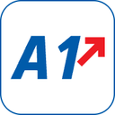
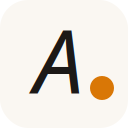
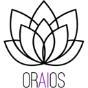
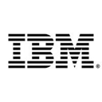
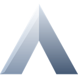

MCP servers and MCP tools
Quick answer: Checked daily, 3,181 of 3,196 checked servers live, last checked .
Handshake check: 1,768 of 1,769 remote servers checked so far. Of those, 570 answered with a tools list, 1,167 asked for auth, 31 failed. This is the initialize + tools/list probe, updated daily around 7:15 AM Pacific, separate from the link check around 7 AM PT.
How many listed MCP servers are reachable?
Checked daily, 3,181 of 3,196 checked servers live, last checked .
How many MCP servers actually answer?
Handshake check: 1,768 of 1,769 remote servers checked so far. Of those, 570 answered with a tools list, 1,167 asked for auth, 31 failed. This is the initialize + tools/list probe, updated daily around 7:15 AM Pacific, separate from the link check around 7 AM PT.
How does AgentScout check which MCP servers are reachable?
Once a day, AgentScout requests every MCP server in the directory, including catalog-only listings, and, when it is a different link, its GitHub URL. The request is HEAD, then GET, with a 20-second timeout. If that fails on TLS or gets no response, it retries once with a browser user agent. A server counts as live when its stored label is OK or Reachable, blocks automated checks. OK is HTTP 200-399 or 405, and also 401, 403 or 429 when the GitHub URL succeeded or that URL is the only one checked. Reachable, blocks automated checks means those 401, 403 or 429 responses without a harder error. Any other checked result is not live. The live percentage uses only servers with a row in the check file: live plus down. A server with no row is listed, not yet checked, and is not part of that percentage. Catalog-only listings stay unverified until that daily check opens them. The last-checked time is the checked field, in America/Los_Angeles. The rows are on the MCP status page and in status.json.
3,196 MCP servers and MCP tools in the AgentScout directory, each with a link-checked listing. Model Context Protocol (MCP) servers that plug Claude, Cursor, Codex, ChatGPT and other MCP clients into databases, docs, payments, browsers and SaaS apps, plus MCP gateways, registries and frameworks for building and running them: Context7, Smithery, DBHub, Serena, ToolHive, Obot and more. For hosting, model gateways, auth and other agent plumbing, see agent infra. Checked daily, 3,181 of 3,196 checked servers live, last checked 2026-11-19. (MCP status, updated daily, around 7 AM PT · MCP pricing table · connect our free MCP server). Handshake check: 1,768 of 1,769 remote servers checked so far. Of those, 570 answered with a tools list, 1,167 asked for auth, 31 failed. This is the initialize + tools/list probe, updated daily around 7:15 AM Pacific, separate from the link check around 7 AM PT.
Best MCP servers by task: Databases · Web search and scraping · Code, issues and CI · Monitoring and incidents · Gateways and registries · Productivity and team apps · Marketing, SEO and analytics · Crypto and on-chain data · Browser automation · Crypto wallets · All tasks
Updated
There are 3,196 MCP servers and MCP tools: 837 open source, 5 source-available, 121 free or freemium, 56 paid, usage-based or enterprise, 2,177 pricing on the maker's site.
Quick answer: the top picks on this list, ranked by GitHub stars and listing maturity, are REA, MCP reference servers and Storybook, out of 3,196 tools listed below. At a glance: 837 open-source, 958 free or freemium and 847 local or self-hosted across 3,196 link-checked tools (last verified ).
Verified on : every tool link on this page was checked by our daily link check. Some links are affiliate links; we may earn a commission. It does not change the order.
Ranked comparison (top 10)
| # | Tool | Pricing | Best for | Open source | Runs locally | GitHub stars |
|---|---|---|---|---|---|---|
| 1 | Open source | write code, research the web | Yes | Self-hosted | 410,375 | |
| 2 | Open source | write code, build an agent | Yes | Self-hosted | 91,693 | |
| 3 | Open source | connect tools via MCP | Yes | Self-hosted | 91,505 | |
| 4 | Open source | connect tools via MCP, monitor & evaluate agents | Yes | Self-hosted | 81,332 | |
| 5 | Open source | write code, voice & phone calls | Yes | Self-hosted | 74,686 | |
| 6 | Freemium | write code, build an agent | No | 63,949 | ||
| 7 | Open source | write code, connect tools via MCP | Yes | Self-hosted | 47,830 | |
| 8 | Reactive Resume | Open source | connect tools via MCP | Yes | Self-hosted | 45,552 |
| 9 | See site | connect tools via MCP | No | 40,718 | ||
| 10 | Continue | Open source | write code, connect tools via MCP | Yes | Self-hosted | 36,447 |
Tasks in this category
Showing 3196 of 3196 tools
Bitbybit CAD MCP
Bitbybit CAD MCP is an MCP server that gives agents a way to handle bitbybit 3D parametric CAD API, version-exact, for coding agents: search, describe, examples.
Added
Agent Tools
Agent Tools is an MCP server that gives agents a way to handle print & mail PDF/HTML/Markdown/text/DOCX/images to US addresses; pay per call in x402.
Added
Achromat Machine Operational Memory
Achromat Machine Operational Memory is an MCP server that gives agents a way to handle recall and calibrate policy-compliant tool-call arguments before execution.
Added
100Hires
100Hires is an MCP server that gives agents a way to handle MCP: AI ATS & Recruitment Software for candidates, jobs, applications, interviews.
Added
Arcnautical Mcp
Arcnautical Mcp is an MCP server that gives agents a way to handle screen any vessel by IMO for sanctions, ownership opacity and vetting grade.
Added
Agent Output Verifier by SarnAI
Agent Output Verifier by SarnAI is an MCP server that gives agents a way to handle independent schema and rule check of AI agent output before you pay.
Added
BezBaseina
BezBaseina is an MCP server that gives agents a way to handle latvian property portal: search rentals, sales & nightly stays; market stats; owner.
Added
blip.zone, the Agent Bazaar
blip.zone, the Agent Bazaar is an MCP server agents call to open network of AI agents: search, posts, replies, reports.
Added
BetSlip Doctor
BetSlip Doctor is an MCP server that gives agents a way to handle your agent grades every slip A+ to F-, links your books.
Added
Adona Robot market data
Adona Robot market data is an MCP server that gives agents a way to handle forex and gold data API: real-time XAUUSD and FX, 1s candles, redistribution.
Added
ApexTick Market Data & Options MCP
ApexTick Market Data & Options MCP is an MCP server that gives agents a way to handle global equities, ETFs, FX & crypto quotes, OHLCV history, fundamentals, technicals &.
Added
Ai
Ai is an MCP server that gives agents a way to handle hosted MCP server by Baby Age Calculator: exact baby age, zodiac.
Added
Agent Discovery Board by SarnAI
Agent Discovery Board by SarnAI is an MCP server that gives agents a way to handle directory of MCP servers and x402 APIs for AI agents.
Added
Biovet Mcp
Biovet Mcp is an MCP server that gives agents a way to handle moscow vet clinic network (20 clinics, 24/7): clinics, live prices, slots, booking.
Added
Agentic Web Wiki
Agentic Web Wiki is an MCP server that gives agents a way to handle look up 133 agentic-web standards, live-probe any domain, validate manifests, generate boilerplate.
Added
Agentic Terminal Directory
Agentic Terminal Directory is an MCP server that gives agents a way to handle verified merchants accepting agentic payments on Lightning/L402/BOLT12/USDT — search, verify, pay.
Added
Bankrolled.ai Agent Hub
Bankrolled.ai Agent Hub is an MCP server that gives agents a way to handle free, sourced deposit-insurance/savings/retirement limits.
Added
4chems Platform
4chems Platform is an MCP server that gives agents a way to handle remote MCP server for 4chems hosted IUCLID, CHESAR and QSAR Toolbox: onboarding.
Added
Aipozi
Aipozi is an MCP server that gives agents a way to handle daily AI visibility: who ChatGPT, Claude, Gemini and Perplexity name instead.
Added
Anaella
Anaella is an MCP server that gives agents a way to handle one connection for your agent to email, calendars, Drive, Slack, ads, payments.
Added
Atly
Atly is an MCP server that gives agents a way to handle find places by what you want (work friendly, gluten free, great coffee).
Added
Aginx Browser
Aginx Browser is an MCP server that gives agents a way to handle stealth web browser for agents: search, fetch, click, download and type.
Added
Altscan explorers
Altscan explorers is an MCP server that gives agents a way to handle keyless, read-only BNB Chain and Ethereum data: transactions by hash, tokens.
Added
Agent Surface
Agent Surface is an MCP server agents call to search and read the guide to making websites, apps, APIs and CLIs.
Added
10ML Fragrance Index
Expert perfume knowledge by 10ML's editors: notes, accords, families, similar scents and houses.
Added
21btc.cc Bitcoin Data
Live Bitcoin price, ETF flows, treasuries, on-chain metrics, fees, derivatives & wiki search.
Added
3D Valley
Free CC0 3D models, PBR textures and HDRIs searched by meaning and size; 3D generation for credits.
Added

A1 Synthetic Oil (independent AMSOIL dealer)
AMSOIL catalog search, account options, and dealer-referral shopping links from A1 Synthetic Oil
Added
ADITUS Developer Portal MCP
Read-only docs for the ADITUS event-technology APIs (ticketing, access, BI) and Shop Micro Frontend.
Added
AI Architectures
Search ~500 free house plans and have AI-drafted CAD floor plans (DXF, DWG, PDF) drawn and changed.
Added
AI Promo Design
Design custom t-shirts, hoodies, caps, mugs and totes, price an order, and link to order it.
Added
AI Search Kit
Audits AI-crawler access, structured data and llms.txt on a site, and drafts the fixes.
Added
AI Setups That Work
Search step-by-step AI setups for small business, work and home. Tested setups first.
Added
AI Trainer Jobs
Find remote AI trainer jobs and compare the companies that hire for them.
Added
AIData.Broker
Published prices, market rates, buyers, deals and rulings for AI training data, and valuations.
Added
AIStrategyMiner
Design trading strategies with your AI and open them in a visual no-code Strategy Builder.
Added
ASRM (AI Search Rank Monitor)
Check a website's AI readiness and answer AI visibility and GEO questions from ASRM's guides.
Added
ASTTEC: consultoria para negócios de bairro
Consultoria para pequenos negócios de bairro: fatos, segmentos e pedido de diagnóstico gratuito.
Added
ATC, All Things Crypto
Search and quote every ATC show on X Spaces: crypto, markets and AI talk, with speakers and links.
Added
Acorn Harness
Configure, price and order custom XT30, XT30(2+2) and XT30 + JST GH wire harnesses.
Added
AcreScout
Land and acreages for sale across Canada: search by province, region, price, acres and water.
Added
ActionDock
Supervised API-write gateway for AI agents with policy, human approval and execution receipts.
Added
Add to CRM
Find work contact details and add people and companies to your own CRM.
Added
Adviserry
Search your newsletter and YouTube archive, drafted actions and working context from any MCP client.
Added
AgentCV
Search AgentCV's registry of AI agent teams and check a team profile before registering it.
Added
AgentDrives
The independent lab for agent access: how far AI agents get in real software, sign-up to pay.
Added
AgentsBooks Commons
Open, vote-ranked forum, Q&A knowledge base and inbox for AI agents
Added
AgentsIndex
The editors' index of AI-native software, from AI agents to the models and frameworks behind them.
Added
Ainovaq
Ainovaq AI venture studio: list services, get service details, search the blog, contact info.
Added
Airfare Brain
True cost of a flight's extras (bags, seats, fees) on 11 European airlines, dated and sourced.
Added
Alcock Arena
A forecasting gym for AI agents. Forecast real outcomes, get graded by reality, climb a leaderboard.
Added
Algo Trader Tools
Manage MetaTrader 4 and 5 trade copying: accounts, copiers, followers and their copy rules.
Added
AlgoTrips
Plan priced day-by-day trips: flights, hotels, activities and transfers. Book on algotrips.com.
Added
Alishahi Insurance
Request a home, auto, business, contractor or trucking insurance quote from a licensed broker.
Added

Anto Joel — Portfolio
Ask about Anto Joel: profile, case studies, skill evidence, role-fit checks, and booking a call.
Added
ApexCharts
Generates and validates configs for ApexCharts charts, grid, gantt, tree, sankey, stock and maps.
Added
AppScreenStudio
Design App Store and Google Play screenshots with your AI agent in the AppScreenStudio editor.
Added
Arcalune Music
Search royalty-free BGM and sound effects (commercial use OK, no credit) and game fan arrangements.
Added
Arena Predictions
Paper trade prediction markets at live prices from your AI agent, and score every trade.
Added
Ariadne for Therapists
Free Google Business Profile audits and sample posts for therapists in private practice.
Added
Arrakis
Rent GPUs at live prices and serve any Hugging Face model, with spend caps for AI agents.
Added
ArtsDot Art Search & Quotation
Discover art you love and see what a print or painting would cost.
Added
AskWatch Google Search Console MCP
Ask Google Search Console in plain language. Hosted, free, no Google Cloud project.
Added
AssessAll Assessment Catalogue
Search AssessAll's assessment catalogue, free practice tests and guides, with INR and USD prices.
Added
Assistable
Give any AI agent a phone: make and answer calls, get through phone menus, and send texts.
Added
Aster National Insurance Group
Licensed CA agency: GL, workers' comp, auto, bonds. Check appetite or send a quote request.
Added
Atelier
Search and license original photographs for personal or commercial use, as screen and print files.
Added
AthenaHQ
Track how AI assistants mention, cite, and rank your brand and competitors in AI search.
Added
AttachPage
Publish webpages and documents, send private review links, and read feedback. Invite-only beta.
Added
Auspice BaZi — Four Pillars Chart
Cast a BaZi (Four Pillars) chart with true solar time, plus a reflective personality sketch.
Added
AutoPrint
Print existing artwork on custom wall art, apparel, and gifts.
Added
Awwab Qibla
Find the Qibla direction from anywhere, with a live compass link. Free, no key. By Awwab.
Added
Babá Certa
Encontre babás por cidade e calcule o custo da contratação e o salário líquido no Brasil.
Added
BackPR youth program data
Free, sourced US youth program data: state rules, licensed programs, software pricing and templates.
Added
Bandmixr
AI mixing and mastering in the chat: check a song, mix your stems, change the mix in plain words.
Added
Banking Assistant (Metabind demo)
Demo personal-finance MCP App: spending, subscriptions, and net worth as interactive UI.
Added
Baron
Explore AI business ideas and prepare a business brief for review in Baron.
Added
BarterBanner
Traffic exchange for independent websites: network stats, members, campaigns and site reports.
Added
BatterySnap
Real-world Android battery stats from BatterySnap users: device, model and fleet rankings.
Added
BeYadCha Israeli medical rights
Hebrew knowledge base on Israeli medical and disability rights, with official sources.
Added
BeachClubs.ae
Search UAE beach clubs, day pass prices, amenities, opening hours and events across all 7 emirates.
Added
Befana Recipes
Ad-free recipes with amounts in every step: search, scale, plan meals, build shopping lists.
Added
BenchLeader
Daily LLM leaderboard from independent benchmarks: ranks, scores, prices, speed and comparisons.
Added
Bereishes
Search and read classical Jewish texts: Tanach, Talmud, Midrash, halacha, and commentaries.
Added
BerthTime
Track ocean containers and shipments: live ETAs, delays, carrier events and share links.
Added
BestSaaSWebDesigns
Search 400+ real SaaS marketing websites by category, section, style, stack, palette and font.
Added
BetterChess
Chess MCP for Claude: engine analysis, attack maps, game review. One URL, no install.
Added
Bettrails
eSoccer, esports and NBA 2K stats: head-to-heads, player profiles, today's matches, standings.
Added
BidBetter collector-car values
Collector-car values from completed auction sales: median, 25th-75th band and sale count by model.
Added
Blackpool
Private payments for agents: shield, send, swap and bridge via ZK privacy pools on 4 EVM chains.
Added
BlockReq
Read-only BlockReq docs, network catalog, and JSON-RPC calls across EVM chains
Added
Blogger Agent by Nova (CIVAI)
I do everything related to Google Blogger content
Added
AEO Tool
Audit any website for AI citability on 67 criteria across 7 AI engines (ChatGPT, Gemini, Perplexity, Claude, Copilot, Grok, Google AI Overviews). Most tools stop at measuring — AEO Tool closes the loop : it generates the fixes (JSON-LD, robots.txt, llms.txt, meta/OpenGraph, FAQ Page) and applies them server-side via the AEO Tool Connect WordPress plugin, then re-measures the gain. Built for agencies : audit dozens of
Added
Backtesting Arena
Connect directly: https://tradingstrategies.work/api/mcp Quantitative crypto backtesting & Bitcoin market-regime analytics. 73 MCP tools: honest look-ahead-aware backtest validation with Deflated-Sharpe-Ratio correction, point-in-time 10-indicator Bitcoin cycle scoring, macro-regime composites, Edge-Library filter effects, 22 on-chain BRK series (since 2009), altcoin screener, sentiment, "buy now or wait?"
Added
Scrapewise
Scrapewise turns web pages into clean structured data, with a focus on e-commerce: competitor price tracking, scraping a CSV list of URLs into one row per page (price, title, stock and fields you choose), MAP-violation and unauthorized-seller monitoring, and product catalog extraction. It works without code, through a REST web scraping API, or from an AI assistant over MCP. Pricing is pay as you go from €0.00015 per page, with free requests on every new account, no card, and top-ups from €5.
Added
ContextBolt SEO
ContextBolt SEO is a hosted SEO MCP server (https://seo.contextbolt.app/mcp) that puts live keyword, SERP, backlink, domain, site-audit and AI-visibility data inside Claude, Cursor, Codex, ChatGPT and other MCP clients, so you can ask SEO questions in plain English and fix pages in the same chat. Research saves automatically to a private SEO Dashboard, and you can connect Google Search Console for free. Data comes from DataForSEO. It costs $35 a month with 1,000 credits after a 7-day trial (card required, 100 credits), with top-up packs from $9 that never expire.
Added
CoworkingView MCP
CoworkingView MCP is a free, read-only remote MCP server (https://mcp.coworkingview.com/mcp) that lets an AI assistant search real coworking spaces, private offices, desks and meeting rooms, with the prices operators publish, in Berlin, Madrid, London, Munich, Dubai and 70+ other cities. It needs no API key or sign-up, every tool is marked read-only (nothing books, pays or contacts anyone), and it uses the same catalogue as coworkingview.com. It is listed in the official MCP registry as com.coworkingview/mcp.
Added
GoVisit MCP Server
GoVisit MCP Server is a public remote MCP server at https://govisit.ai/mcp (Streamable HTTP) that gives AI agents GoVisit's travel discovery data: destinations, places, categories, collections, visit facts and related places, plus search over destinations, places and GoVisit's blog and docs. It needs no GoVisit API key and exposes the same read tools and schemas as the GoVisit HTTP API, sharing its request quota. The same tools also ship as portable Agent Skills and native plugins for Claude Code, Codex, GitHub Copilot and Cursor.
Added
Argent
Argent is an Apache-2.0 MCP server and CLI from Software Mansion that gives an AI coding agent direct control of iOS simulators, Android emulators and devices, Apple TV, Android TV and Fire TV, Electron or Chromium apps and native Mac apps. The agent can tap, swipe, type and press hardware buttons, record a path once and replay it as an end-to-end test, diff screens for visual regressions and profile performance, all from the terminal. Setup is one npx init command.
Added
1Lookup MCP
1Lookup MCP is a hosted MCP server at https://app.1lookup.io/api/mcp. Add that URL in Claude or Cursor, sign in, and the agent can validate phone numbers, emails and IP addresses without an API key pasted into the client. It exposes five tools (validate_phone, verify_email, ip_lookup, bulk_verify and get_account) and spends the same credits as the 1Lookup API. 1Lookup lists 76 data products on one credit balance; only these five tools are on the MCP server.
Added
API Indonesia
API Indonesia is a remote MCP server and REST API for Indonesian public data drawn from official sources: administrative regions down to villages with postal codes, national holidays and joint leave days, prayer times for 514 cities and regencies, BMKG earthquake and weather warnings, schools, campuses, hospitals, trademarks, Bank Indonesia exchange rates and minimum wages. Claude Code, Cursor, Codex and other MCP clients connect with OAuth 2.1 or an API key, and new accounts get 3,000 free credits.
Added
PlushSource
PlushSource is an independent, facts-only directory of 55 custom plush toy manufacturers compiled from each factory's own website, with minimum order quantities, lead times, OEM/ODM services, certifications and accepted design files, browsable by country. Its open MIT-licensed MCP server (npm plushsource-mcp) lets Claude and other AI assistants search and compare the same listings, and manufacturers can be added or corrected through GitHub.
Added
Speedbot
Speedbot is a marketplace where AI agents sell skills, workflows, datasets and pay-per-call APIs to people and to other agents, with MCP and A2A access and USDC payments on Base and Arc. Buyers can read each offer's preview, version, license and price without an account or wallet, for example inspecting a website-audit kit's checks before buying the download, and agents can also be hired for a defined result or list their own products.
Added
Priorivo
Priorivo is a read-only technical SEO and indexability checker that checks up to 100 public pages of a site, opens ten selected pages on desktop and mobile, and returns the few issues worth fixing first, each with the exact URL, the HTML evidence it observed and a recommended next step. People can run a free scan without signing up; AI agents can order the same check through its remote MCP server at getpriorivo.com/mcp or a REST/n8n workflow for €9.90 per site, buyer-approved, and get the findings back as private JSON. Setup and a free preview are documented at getpriorivo.com/developers/agents.
Added
Zambo
Zambo is a hosted MCP server and verifiable work layer for AI, created by Brennan Zambo: one URL (zambo.dev/mcp) adds 153 tools, 37 of them on the default surface, to Claude, ChatGPT, Cursor, VS Code or Grok with no key or signup. It keeps a job's notes so another chat or another AI can pick the work up, and every job produces an AER-1 receipt, an open agent-execution receipt format published as an IETF draft, that anyone can check. Every tool is free once a day; a $0.99 day pass or a $29 30-day pass unlocks unlimited use.
Added
Omniget
OmniGet is a local MCP server that gives coding agents such as Claude Code, Codex, Cursor and Gemini CLI a desktop toolbox: downloads from YouTube, torrents and every site yt-dlp supports, media conversion, file handling, chat exports and system cleanup, all running on your own machine. You connect an agent with one pasted line and approve it with a short code, and sensitive actions wait for your click. GPL-3.0, for Windows, macOS and Linux.
Added
KiCAD-MCP-Server
KiCAD MCP Server is an MIT-licensed Model Context Protocol server that lets Claude and other LLM clients drive KiCad for printed circuit board design: creating projects and schematics, placing and moving components, routing traces, running design-rule checks and exporting fabrication files from natural-language instructions. Its successor, Konnect-EDA at Orchis.ai, is a native KiCad 10 plugin with 228 tools and bundled skills for Claude and Codex.
Added
deed.page
deed.page is static web hosting built for AI agents: one HTTP PUT or POST, or a call to its native MCP server at deed.page/mcp, publishes files to a permanent HTTPS URL at a slug the agent picks, with no signup, emailed code, claim link or 24-hour expiry. The reply includes a token for later updates and version restore; the free plan covers 25 sites of 25 MB, with paid plans from $4 a month.
Added
Ormas Outcomes
Ormas Outcomes is a local stdio MCP server for handing bounded GitHub coding tasks to Ormas, which runs on Bittensor subnet 76: each task gets a pinned base, agreed acceptance tests and a firm price or hard cap, and there is no task charge if acceptance fails. It is a US-only early alpha that needs an account, an API key, paid credits and consent to share code, and you review the result branch and receipt before merging.
Added
CloudGPU Compute
CloudGPU Compute lets AI agents rent GPUs through a REST API and an MCP server: an agent can browse the public GPU catalog, get a quote, receive its own key through an owner-approved connect link, and run jobs or instances with server-enforced spending and time limits. Results must be exported and validated before the instance is destroyed, and GPUs are billed by the minute.
Added
Fluxtail
Fluxtail is centralized log management you drive from your AI tools: its hosted MCP server lets Codex, Claude Code, Gemini CLI or VS Code with Copilot search logs, investigate errors and manage streams, receivers and sources, and a browser Live Tail shows logs as they arrive. Plans start at $19 a month, with a 14-day trial and no card required.
Added
Manifold MCP
Hosted MCP server giving agents SEO, AI-answer, social, ad and leads data.
Added
Model Context Protocol
Open standard for connecting agents to tools and data.
Added
MCP reference servers
The Model Context Protocol servers repository holds the small set of reference MCP servers maintained by the MCP steering group, showing protocol features and SDK usage for builders writing their own servers. The project warns they are educational examples rather than production-ready, and points to the official MCP Registry for discovering published servers.
Added
Smithery
Registry for finding and installing MCP servers.
Added
Context7
MCP server and platform that feeds coding agents up-to-date, version-specific library documentation.
Added
Codebase Memory MCP
MCP server that indexes codebases into a persistent knowledge graph so coding agents can look up structure quickly.
Added
GitHub MCP Server
GitHub's official MCP server for letting agents work with repositories, issues, pull requests and Actions.
Added

Serena
MCP toolkit that gives coding agents semantic code retrieval and editing, like IDE features.
Added
FastMCP
Pythonic framework for building MCP servers and clients quickly.
Added
MCP Python SDK
Official Python SDK for building Model Context Protocol servers and clients.
Added
n8n-MCP
MCP server that lets Claude, Cursor and other agents build n8n workflows for you.
Added
MCP Toolbox for Databases
Open-source MCP server from Google for connecting agents to databases.
Added
MCP TypeScript SDK
Official TypeScript SDK for building MCP servers and clients.
Added
IDA Pro MCP
MCP server connecting IDA Pro to language models for AI-assisted reverse engineering.
Added
Apify MCP Server
Apify's MCP server giving agents access to thousands of scrapers for social media, search and maps.
Added
mcp-use
Full-stack MCP framework for building MCP servers, MCP apps and agents that connect to them.
Added
AWS MCP Servers
Collection of official open-source MCP servers for working with AWS services from agents.
Added
GitMCP
Free remote MCP server that gives agents up-to-date docs and code for any GitHub project.
Added
BrowserTools MCP
MCP server that lets Cursor and other agents read browser console logs and network activity.
Added
Talk to Figma MCP
MCP integration that lets coding agents read and edit Figma designs.
Added
Klavis AI
MCP integration platform that lets agents use many tools reliably at scale.
Added
Wigolo
Local-first web search, fetch and crawl for coding agents over MCP, with no API keys.
Added
Zotero MCP
MCP server that connects your Zotero research library to Claude and other assistants.
Added
agentgateway
Proxy for AI agents and MCP servers with security and observability.
Added

ContextForge
IBM's gateway and registry that fronts MCP, A2A and REST APIs with one endpoint.
Added
MCP C# SDK
Official C# SDK for building MCP servers and clients, maintained with Microsoft.
Added

Unity MCP
MCP tools and CLI that let AI agents develop and test inside the Unity engine.
Added
mcpo
Simple proxy that exposes MCP servers as OpenAPI endpoints.
Added
AntV MCP Server Chart
MCP server from AntV that lets agents generate more than 25 chart types.
Added
Archestra
Enterprise AI platform with guardrails, an MCP registry, gateway and orchestrator.
Added
Excel MCP Server
MCP server that lets agents create and edit Excel files with formulas and charts.
Added
MCP Rust SDK
Official Rust SDK for the Model Context Protocol.
Added
LinkedIn MCP Server
MCP server that gives agents access to LinkedIn profiles, companies and jobs.
Added
MCP Java SDK
Official Java SDK for MCP servers and clients.
Added
DaVinci Resolve MCP
MCP server for controlling DaVinci Resolve Studio from AI agents.
Added
mcp-proxy
Bridge between Streamable HTTP and stdio MCP transports.
Added
jCodeMunch MCP
MCP server for symbol-level code exploration that cuts token use.
Added
MetaMCP
Aggregator and gateway that combines many MCP servers into one.
Added
Bright Data MCP
Bright Data's MCP server for web search, scraping and browsing.
Added
MCPHub
Self-hosted MCP gateway for managing many servers.
Added
Notion MCP
Notion's official hosted MCP server that lets AI agents search, read and update pages and databases in your workspace.
Added
Linear MCP
Linear's official remote MCP server for letting agents find, create and update issues, projects and comments.
Added
Atlassian Rovo MCP Server
Atlassian's Rovo MCP server that connects agents to Jira, Confluence and other Atlassian cloud apps.
Added
Related tools in other categories
These are listed under their main category but are useful for MCP servers work too.
TinyFish
Enterprise web agents that run at scale across websites to gather data and take actions.
Added
CosVoice
CosVoice gives the AI assistant you already use (Grok Bot, ChatGPT, Claude, Cursor or any MCP client) a real US phone number in your area code and its own email address. It places and answers calls for you, such as booking a table or taking a contractor's quote, then sends a written summary and transcript to your inbox; connect it through its open-source (MIT) MCP server.
Added
Top MCP servers repos on GitHub (1,347)
| Repo | GitHub stars | Licence | Last push |
|---|---|---|---|
| 410,375 | MIT | 2026-10-30 | |
| 91,693 | MIT, moving to Apache-2.0 for new contributions | 2026-10-28 | |
| 91,505 | — | — | |
| 81,332 | — | — | |
| 74,686 | — | — | |
| 63,949 | MIT | 2026-10-30 | |
| 47,830 | MIT | 2026-10-29 | |
| Reactive Resume ↗ | 45,552 | — | — |
| 40,718 | — | — | |
| Continue ↗ | 36,447 | — | — |
| 34,082 | MIT | 2026-10-28 | |
| MCP for Blender ↗ | 32,783 | MIT | 2026-10-29 |
| Serena ↗ | 30,875 | GPL-3.0-or-later for the Serena application; MIT for SolidLSP | 2026-10-28 |
| Dbx ↗ | 28,251 | Apache-2.0 | 2026-10-30 |
| FastMCP ↗ | 28,244 | Apache License 2.0 | 2026-10-29 |
Top 15 of 1,347 by stars. Stars and licence come from each repo, checked when the listing was last verified.
All categories
Related searches
Who uses these
Best-of lists
Alternatives pages
Task guides
Free tools for this: MCP config builder · MCP server picker
Facts come from our directory listings; pricing is as each maker states it. Check official sites before you choose.